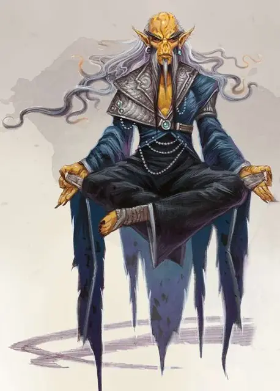

Гитцерай просвещённый
Githzerai Enlightened
Средний Гуманоид (Гит), законно-нейтральный

Класс Доспеха 18
Хиты 112 (15к8 + 45)
Скорость 30 футов
| мод | спас | ||
|---|---|---|---|
| СИЛ | 14 | +2 | +6 |
| ЛОВ | 19 | +4 | +8 |
| ТЕЛ | 16 | +3 | +3 |
| мод | спас | ||
|---|---|---|---|
| ИНТ | 17 | +3 | +7 |
| МДР | 19 | +4 | +8 |
| ХАР | 13 | +1 | +1 |
Навыки Восприятие +8, Магия +7, Проницательность +8
Чувства пассивное Восприятие 18
Языки Гитский
Опасность 10 (5900 опыта)
Бонус мастерства +4
Особенности
Врождённое колдовство (псионика). Базовой характеристикой гитцерая является Мудрость (Сл спасброска от заклинания 16, +8 к попаданию атаками заклинаниями). Он может накладывать следующие заклинания, не нуждаясь ни в каких компонентах:
• Неограниченно: волшебная рука [mage hand] (рука невидима);
• 3/день каждое: размытый образ [blur], поспешное отступление [expeditious retreat], падение пёрышком [feather fall], прыжок [jump], видение невидимого [seeinvisibility], щит [shield];
• 1/день каждое: ускорение [haste], уход в иной мир [plane shift], телепортация [teleport];
Телепатическая защита. Пока просвещенный не носит броню и не носит щит, к его КД добавляется модификатор Мудрости.
Действия
Мультиатака. Гитцерай совершает три безоружные атаки.
Безоружная атака. Рукопашная атака оружием: +8 к попаданию, досягаемость 5 футов, одна цель. Попадание: 13 (2к8 + 4) дробящего урона плюс 13 (3к8) урона психической энергией.
Временной удар (перезарядка 6). Рукопашная атака оружием: +8 к попаданию, досягаемость 5 футов, одно цель. Попадание: 13 (2к8 + 4) дробящего урона плюс 52 (8к12) урона психической энергией. Цель должна преуспеть в спасброске Мудрости Сл. 16, либо переместится на 1 раунд вперёд. Перемещенная во времени цель временно исчезает. Когда эффект заканчивается, цель появляется в той же клетке, где была до этого или ближайшей к ней, если клетка занята.
Описание
Гитцераи никогда не прекращают тренироваться. Они проводят много времени за медитацией для преодоления пределов своих тел и осознания природы реальности. Зерты, завершившие следующую ступень своего обучения, становятся одними из гитцераев, более известными как просвещенными.